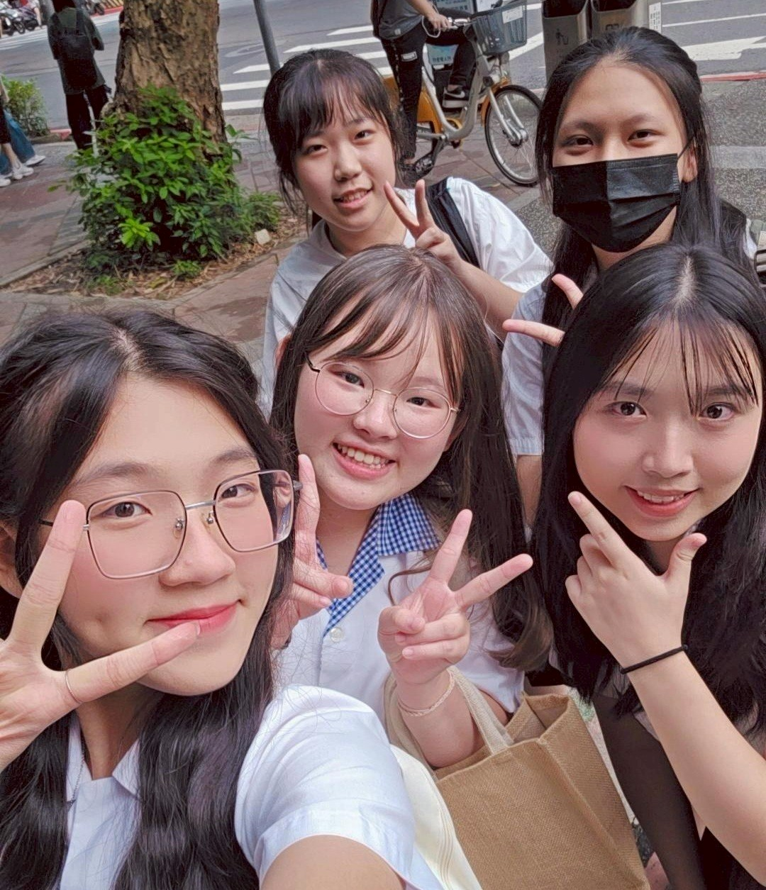
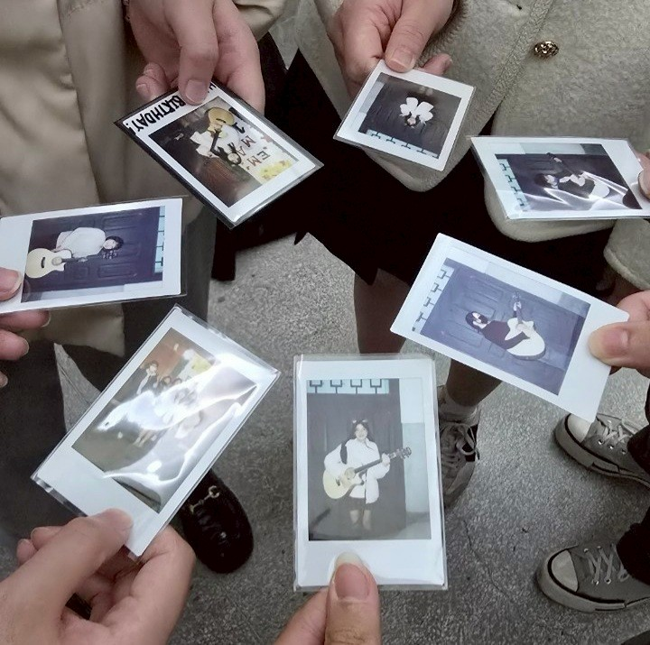
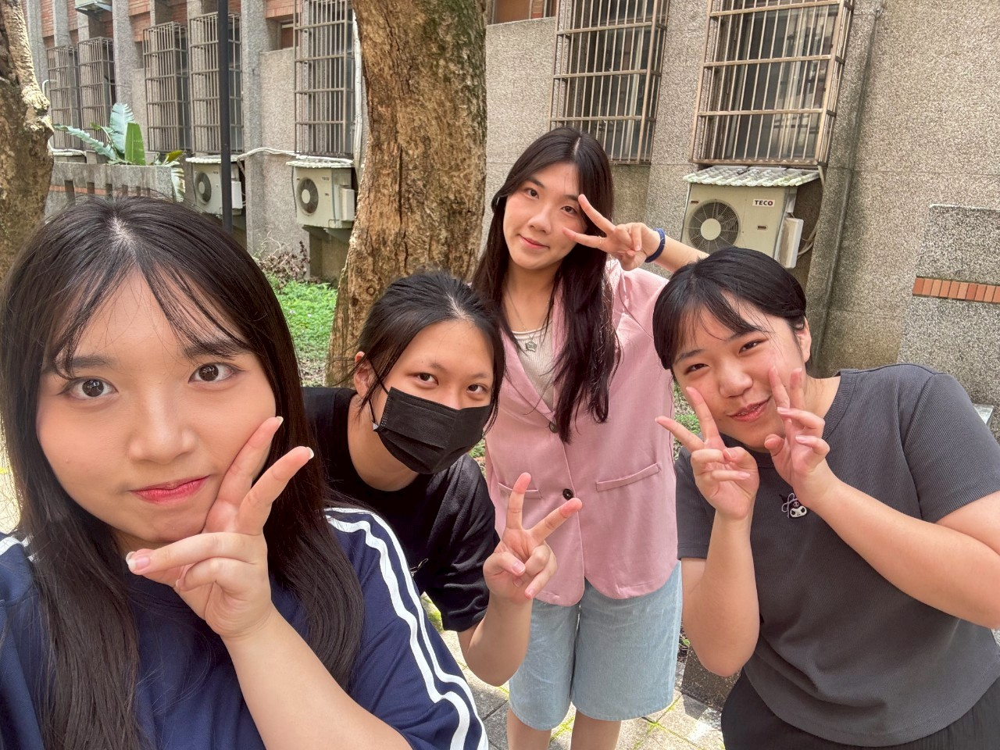
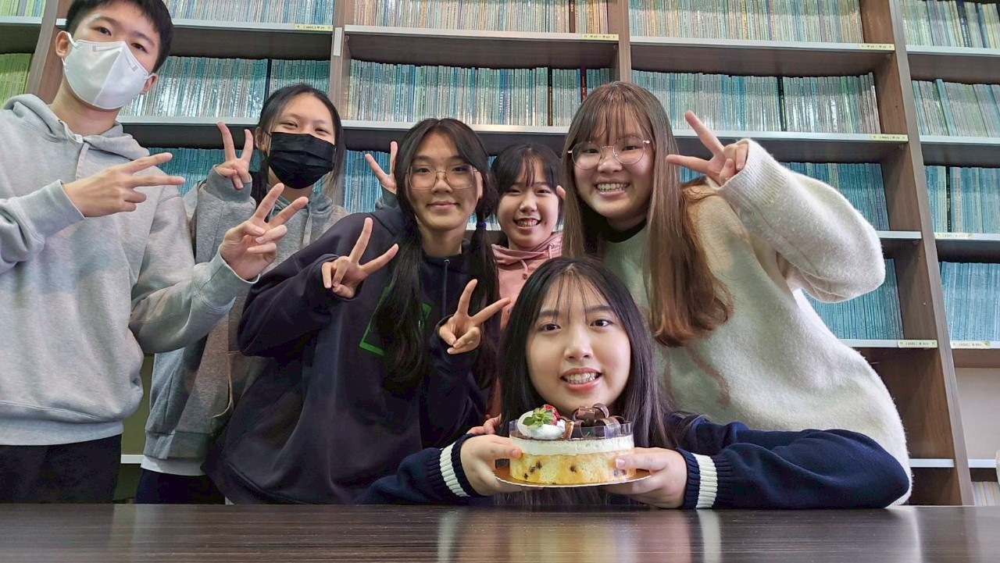
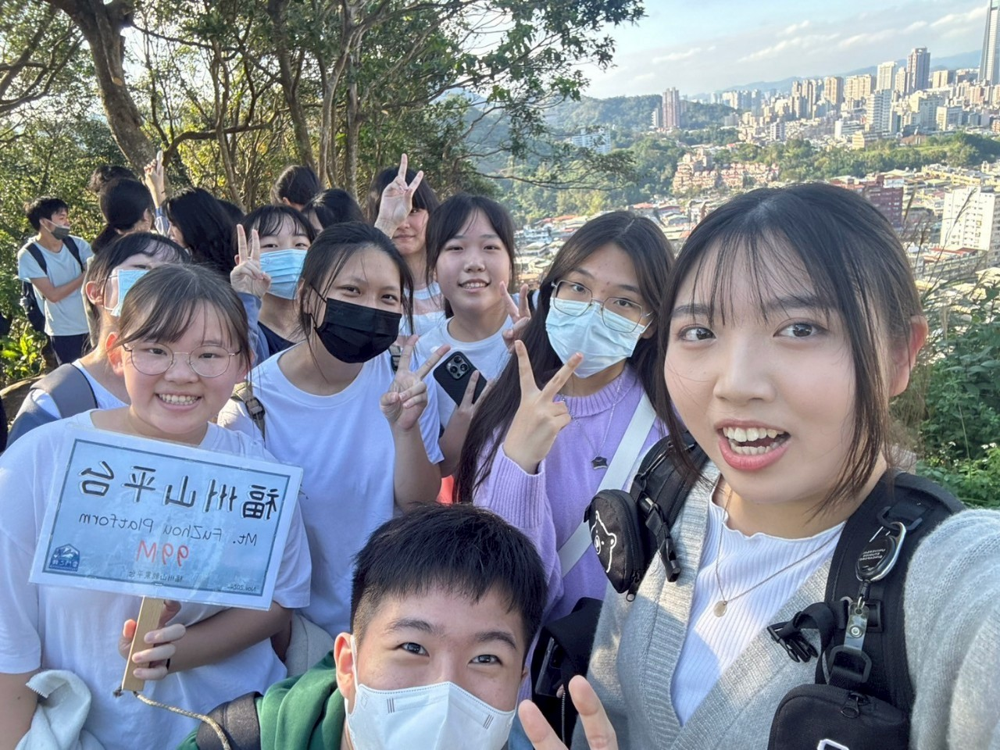
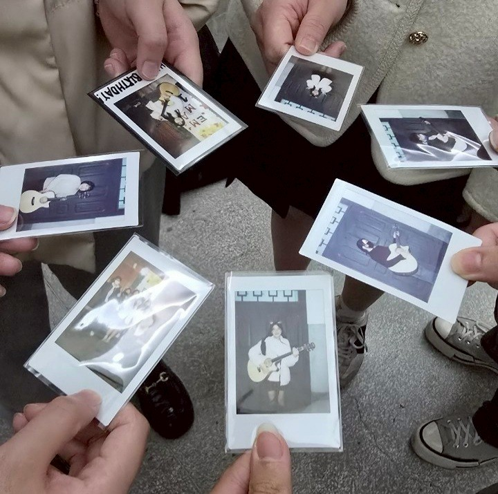
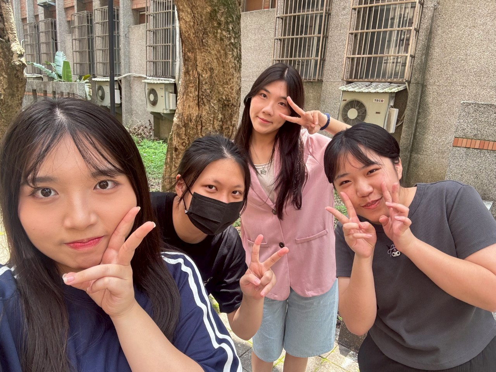
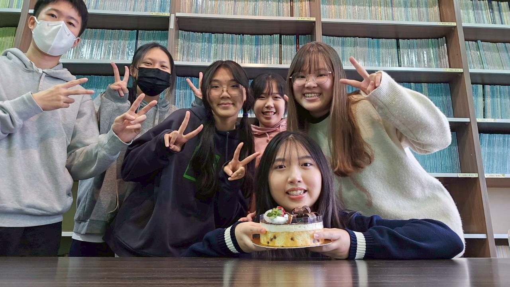
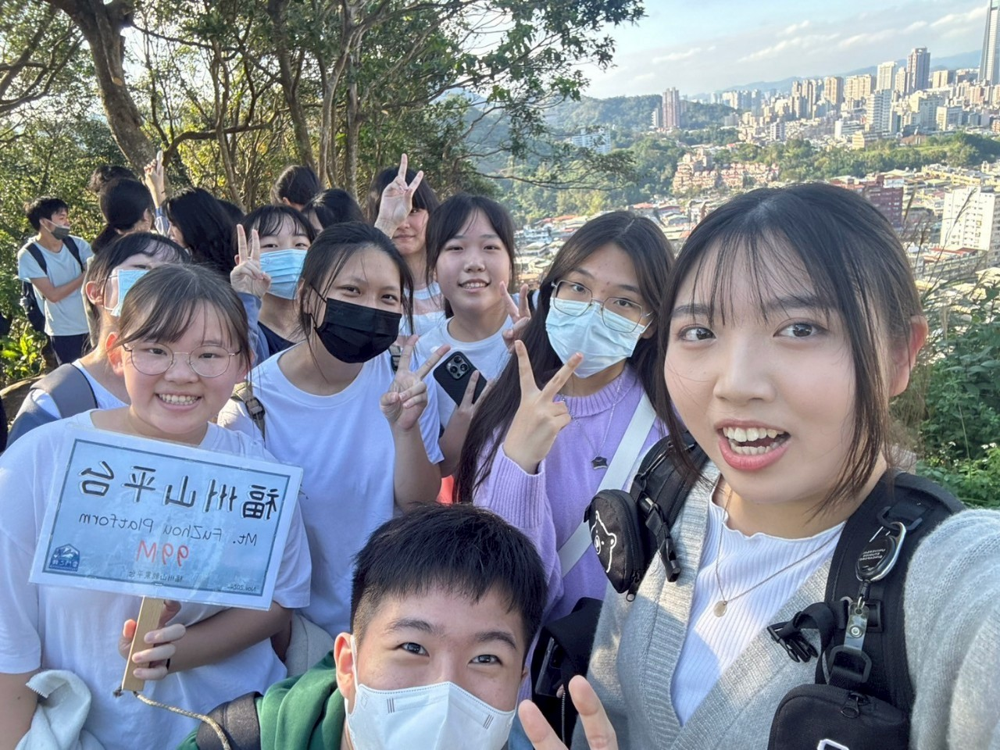

★我的精彩大學生活★








2024年-合照
拍的那天我們要去系烤，剛好大家都穿制服就一起拍了這張照片。
2024年-教經之夜
破防團的大合照，為我們的表演做了個紀錄。

2024年-拍立得
朋友為我們每個人拍了一張拍立得，我還把我的那張掛在我家的牆上展示。
2024年-聚
為了幫朋友慶生，我們去吃聚， 但因為人太多畫面塞不下，所以我和另一個朋友坐在前面。

2024年-拍戲後的合照
拍完微電影(國文作業)後，我們瘋狂拍照。
2024年-慶生01
朋友生日，我們為了幫他慶生還特意提前去預定提拉米蘇。

2024年-慶生02
朋友生日，我騙他要去處理美宣的事，結果是跑去拿蛋糕。

2024年-爬福州山
體育老師帶我們去爬的，階梯長到很像是忠孝復興的手扶梯。